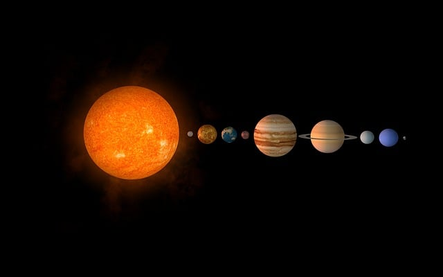

Sistema Solar

Estrellas
"Cada estrella es un código por descifrar"
Los fenómenos cósmicos son eventos o procesos que ocurren en el universo y que suelen implicar fuerzas físicas extremas, energías inmensas o comportamientos inusuales del espacio, el tiempo y la materia.
Agujeros negros:
Región del espacio donde la gravedad es tan intensa que nada puede escapar de ella, ni siquiera la luz. Se forma cuando una gran cantidad de masa queda comprimida en un espacio extremadamente pequeño, lo que curva el espacio-tiempo a tal punto que crea una especie de “pozo” del que nada puede salir.
Energía oscura:
68% del universo. Causa expansión acelerada.
Recurso: Simulación de ondas gravitacionales (LIGO).
Sistema Solar
Estrellas